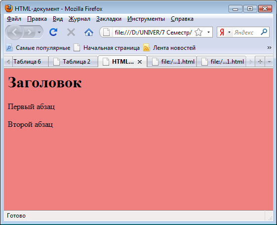
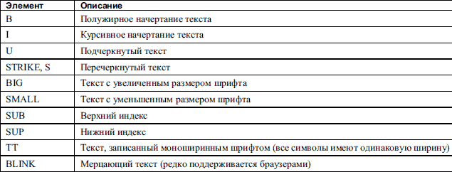

ЛАБОРАТОРНАЯ РАБОТА № 7
СОЗДАНИЕ HTML-СТРАНИЦЫ
Цель работы — создать HTML страницу, изучить основные теги для разработки HTML страниц, рассмотреть способы сохранения и просмотра созданных страниц (с помощью программ Блокнот и Internet Explorer).
Теоретическая часть
Для создания HTML страницы необходимо записать в программе Блокнот соответствующий код, состоящий из набора тегов (команд), сохранить данный документ с расширением HTML и открыть его с помощью программы Internet Explorer.
Как в любом языке программирования в языке HTML содержится большое количество разнообразных тегов.
Тег HTML состоит из следующих друг за другом в определенном порядке элементов:
— левой угловой скобки < ;
— необязательного слэша /, который означает, что тег является конечным тегом, закрывающим некоторую структуру;
— имени тега;
— необязательных, если даже тег может иметь их, атрибутов. Тег может быть без атрибутов или сопровождаться одним или несколькими атрибутами;
— правой угловой скобки >.
Большинство, но не все теги HTML спарены так, что за открывающим тегом (<HTML >), следует соответствующий закрывающий тег (</HTML >), а между ними содержится текст или другие теги. В таких случаях два тега и часть документа, отделенная ими, образуют блок, называемый HTML элементом. Некоторые теги являются элементами HTML сами по себе, и для них соответствующий конечный тег неверен.
Для каждого тега определяется множество возможных атрибутов. Большинство тегов допускает один или несколько атрибутов, однако атрибутов может и совсем не быть. Значения атрибутов должны быть отделены пробелами или незаполненными строками, к примеру:
<BODY bgcolor = "red" text = "#0000FF">
В приведенном примере устанавливаются красный цвет фона страницы и синий цвет основного текста.
Структура HTML страницы состоит из следующих элементов:
— тег <html> указывает программе просмотра страниц что это html документ;
— тег <head> определяет место, где помещается различная информация не отображаемая в теле документа. Здесь располагается тег названия документа и теги для поисковых машин;
— тег <title> не является частью отображаемого текста. Он может отображаться, например, как заголовок страницы или название окна. Только один <title> может быть в документе. Элемент <title> должен использоваться для идентификации содержимого документа;
— тег <body> определяет видимую часть документа. В этом разделе располагается вся содержательная часть документа (текст статьи, фотографии, формы для заполнения, другие объекты). Он имеет свои атрибуты, например bgcolor (устанавливает цвет фона документа, используя значение цвета в виде RRGGBB, либо используя константы цвета);
Вот пример простого HTML‑документа:
<HTML>
<HEAD>
<TITLE> HTML-документ </TITLE>
</HEAD>
<BODY BGCOLOR = "#F08080">
<H1>Заголовок</H1>
<P>Первый абзац
<P>Второй абзац
</BODY>
</HTML>
Этот HTML‑документ отображается браузером Internet Explorer так, как показано на рис. 7. 1.

Рис. 7. 1. Отображение HTML-документа
Теги для форматирования текста.
Если нужно отобразить некоторый текст с использованием определенного шрифта, отличного от того, который применяется браузером по умолчанию, то можно воспользоваться элементом FONT. Он вводится при помощи парных тегов <FONT> и </FONT>.
Параметры шрифта для элемента FONT устанавливаются заданием значений следующих его атрибутов:
• face — задает название шрифта, например Arial или System;
• size — задает размер шрифта (значение от 1 до 7, по умолчанию используется значение 3);
• color — задает цвет шрифта.
Задание начертания текста является, возможно, самым простым средством форматирования содержимого документа, которое доступно в HTML. Для изменения начертания текста в HTML‑код добавляются элементы, приведенные в таблице.

<H1> … </H1>, <H2> … </H2>, … ,<H6> … </H6> — заголовки 1, 2, … 6 уровня. Заголовки можно выравнивать при помощи атрибута align , который может иметь значения [ left | right | center | justify].
<P> — новый абзац. Можно в конце абзаца поставить </P>, но это не обязательно.
<BR> — новая строка. Этот тег не закрывается (то есть нет тега </BR>)
<HR> — горизонтальная линия
<BLOCKQUOTE>…</BLOCKQUOTE> — цитата. Обычно текст сдвигается вправо.
<PRE> … </PRE> — режим preview. В этом режиме текст заключается в рамку и никак не форматируется.
Гиперссылки
Link — цвет не посещённой гиперссылки
vlink — цвет посещённой гиперссылки
alink — цвет выбранной гиперссылки (при наведении на неё указателя)
<a name="NAME"></a> — Отмечает часть текста как цель для гипперссылок в документе.
<a xhref="http://www.cyberguru.ru/#NAME"></a> — Создает гиперссылку на часть текущего документа.
Нужно отметить , что язык HTML не чувствителен к регистру.
Практическая часть
Создайте HTML страницу примерно следующего вида, используя изученные теги:
Рис. 7. 2. Отображение HTML-страницы
1. Задайте по умолчанию следующие параметры для всех страниц (переопределив, тег <body>):
- цвет фона
- размер шрифта
- цвет шрифта
- семейство шрифта (например, Arial)
2. Задайте по умолчанию следующие параметры для всех абзацев :
- выравнивание абзаца
- отступ красной строки
- размер и цвет первой буквы
3.Задайте по умолчанию следующие свойства ссылок для всех страниц:
- цвет и оформление ссылки
- цвет и оформление активной ссылки
- цвет и оформление посещенной ссылки
- цвет и оформление ссылки, в момент нахождения курсора мыши над ней
Контрольные вопросы
1. С помощью каких программ можно открывать документ HTML?
2. При употреблении тега <HTML> обязателен ли закрывающий тег?
3. Перечислите основные структурные элементы HTML-страницы?
4. Каковы функции тега <Title>? Сколько тегов <Title> может присутствовать в документе?
5. Каковы функции тега <Body>?
6. Перечислите основные теги для форматирования текста?
7. Какова функция элемента SUB ?
8. Какова величина размера шрифта установленная по умолчанию и максимально возможная?
9. Перечислите теги задания цвета гиперссылок и опишите их?
10. Чувствителен ли HTML к регистру?